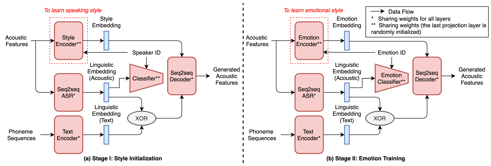

Kun Zhou1, Berrak Sisman2, Haizhou Li1 zhoukun@u.nus.edu berraksisman@u.nus.edu haizhou.li@nus.edu.sg
1 Dept. of Electrical and Computer Engineering, National University of Singapore 2 Information Systems Technology and Design, Singapore University of Technology and Design
----------------------------> Model Architecture <-----------------------

Figure 1. The proposed 2-stage training strategy for seq2seq emotional voice conversion with limited emotional speech data.
The codes of this paper are available here.
(1) CycleGAN-EVC (baseline) [1]: CycleGAN-based emotional voice conversion with WORLD vocoder.
(2) StarGAN-EVC (baseline) [2]: StarGAN-based emotional voice conversion with WORLD vocoder.
(3) Seq2seq-EVC-GL (proposed) : Seq2seq-EVC followed by a Griffin-Lim vocoder.
(4) Seq2seq-EVC-WA1 (proposed) : Seq2seq-EVC followed by a WaveRNN vocoder that is pre-trained on VCTK corpus.
(5) Seq2seq-EVC-WA2 (proposed) : Seq2seq-EVC followed by a WaveRNN vocoder that is pre-trained on VCTK corpus, and fine-tuned with a limited amount of emotional speech data.
Note:
CycleGAN-EVC only can perform the one-to-one conversion, thus we train one CycleGAN-EVC for each emotion pair separately. Both StarGAN-EVC and our proposed Seq2seq-EVC use a unified model for all the emotion pairs.
Emotion Similarity Test
Source
CycleGAN-EVC
StarGAN-EVC
Seq2seq-EVC-WA1
Seq2seq-EVC-WA2
Target
(1) Neutral-to-Angry
(2) Neutral-to-Happy
(3) Neutral-to-Sad
(4) Neutral-to-Surprise
Speech Quality Test
Seq2seq-EVC-GL
Seq2seq-EVC-WA1
Seq2seq-EVC-WA2
(1) Neutral-to-Angry
(2) Neutral-to-Happy
(3) Neutral-to-Sad
(4) Neutral-to-Surprise
[1] K. Zhou, B. Sisman, and H. Li, Transforming Spectrum and Prosody for Emotional Voice Conversion with Non-Parallel Training Data, in Proc. Odyssey 2020 The Speaker and Language Recognition Workshop, 2020, pp. 230237
[2] G. Rizos, A. Baird, M. Elliott, and B. Schuller, Stargan for emotional speech conversion: Validated by data augmentation of end-to-end emotion recognition, in ICASSP 2020-2020 IEEE International Conference on Acoustics, Speech and Signal Processing (ICASSP). IEEE, 2020, pp. 35023506